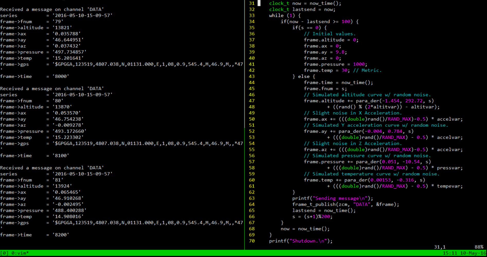

William A Stevens V
Maker, Coder, Dreamer
- I make things because I enjoy learning.
- I ask questions because I am curious.
- I solve problems because I am human.
RIT Launch Initiative
As a member of the RIT Launch Initiative, I have been working to develop the communications software for retrieving and analyzing data from a 12 foot rocket that will be launched 10,000 feet into the air.
ZCM Transport Layer for Embedded Character Devices
 A transport layer for the ZCM Communication Framework used to write messages over a standard POSIX character device.
Can be used to communicate between the two devices, independent of how the devices are connected.
Provides a standard way to communicate telemetry data from the RTOS on the rocket to the ground control PC.